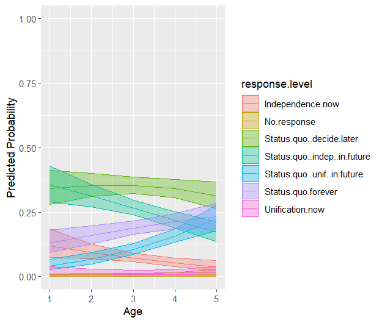
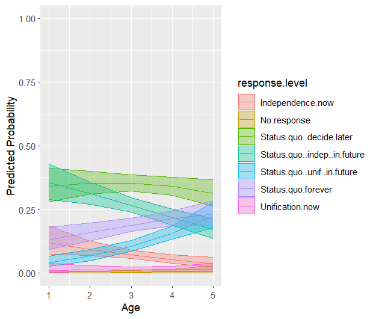

library(haven)
TEDS_2016 <- haven::read_stata("https://github.com/datageneration/home/blob/master/DataProgramming/data/TEDS_2016.dta?raw=true")Assignment 2
Data Exploration
A First Step
First Pass-through:
Initialization
To begin this assignment, I loaded the requisite data set, ‘TED2016’ into R studio (after initiating the ‘tidyverse’ and ‘haven’ packages) with the following code:
Naming the dataset as ‘TEDS_2016’. To get a preliminary ‘hold’ of the data, I go ahead and clean the variable names using:
TEDS_2016 |> janitor::clean_names()# A tibble: 1,690 × 54
district sex age edu arear career career8 ethnic party
<dbl+lbl> <dbl+l> <dbl+l> <dbl+l> <dbl+l> <dbl+l> <dbl+l> <dbl+l> <dbl+lb>
1 201 [Yi Lan… 2 [Fem… 4 [50-… 4 [Col… 1 [Tai… 1 [Hig… 1 [Civ… 1 [Tai… 25 [Neu…
2 201 [Yi Lan… 2 [Fem… 2 [30-… 5 [Abo… 1 [Tai… 2 [Low… 3 [CLE… 2 [Bot… 25 [Neu…
3 201 [Yi Lan… 1 [Mal… 5 [Abo… 5 [Abo… 1 [Tai… 1 [Hig… 1 [Civ… 2 [Bot… 3 [Lea…
4 201 [Yi Lan… 1 [Mal… 4 [50-… 2 [Jun… 1 [Tai… 4 [WOR… 4 [Lab… 1 [Tai… 25 [Neu…
5 201 [Yi Lan… 2 [Fem… 5 [Abo… 1 [Bel… 1 [Tai… 3 [FAR… 5 [FAR… 9 [Nor… 25 [Neu…
6 201 [Yi Lan… 2 [Fem… 5 [Abo… 2 [Jun… 1 [Tai… 2 [Low… 7 [Hou… 1 [Tai… 6 [Som…
7 201 [Yi Lan… 1 [Mal… 5 [Abo… 1 [Bel… 1 [Tai… 4 [WOR… 4 [Lab… 2 [Bot… 25 [Neu…
8 201 [Yi Lan… 2 [Fem… 4 [50-… 5 [Abo… 1 [Tai… 1 [Hig… 2 [Man… 1 [Tai… 24 [Som…
9 201 [Yi Lan… 2 [Fem… 5 [Abo… 1 [Bel… 1 [Tai… 4 [WOR… 4 [Lab… 1 [Tai… 25 [Neu…
10 201 [Yi Lan… 1 [Mal… 4 [50-… 1 [Bel… 1 [Tai… 3 [FAR… 5 [FAR… 2 [Bot… 25 [Neu…
# ℹ 1,680 more rows
# ℹ 45 more variables: party_id <dbl+lbl>, tondu <dbl+lbl>, tondu3 <dbl+lbl>,
# n_i2 <dbl+lbl>, votetsai <dbl>, green <dbl>, votetsai_nm <dbl>,
# votetsai_all <dbl>, independence <dbl>, unification <dbl>, sq <dbl>,
# taiwanese <dbl>, edu_2 <dbl>, female <dbl>, whitecollar <dbl>,
# lowincome <dbl>, income <dbl>, income_nm <dbl>, age_2 <dbl>, kmt <dbl>,
# dpp <dbl>, npp <dbl>, noparty <dbl>, pfp <dbl>, south <dbl>, north <dbl>, …I then take a look at the entire variable (column) list. I notice immediately that some of the 1,690 observations are missing data points, ‘NA’. I figure my first step should be to deal with these before proceeding too far along. But also, some of the variables appear to be categorical or binary. A fact I can at least cursorily confirm by opening the visualization extension in RStudio’s ‘Environment’ pane. I also note that some of the columns might be combing information from other variables.
A missing value can be alikened to a piece of reality that refuses to show up. You figure it must be there, so one is tempted to ignore or rationalize for it, yet it may get in the way of being able to deal with what is at least available.
I run:
sum(is.na(TEDS_2016))[1] 3008Which tells me that I am missing 3008 cell values in total.
So, for the moment I used the following dplyr command to remove missing values:
TEDS_2016=na.omit(TEDS_2016)This may pose a risk of introducing basis in my analysis from this point forward. Indeed, this move reduces the number of rows by 626, or about 37%. However, in the interests of data integrity, I decide to proceed with the removal.
Comparing Variables with ‘Tondu’
In order to compare the variable ‘Tondu’ with the variables ‘female’, ‘DPP’, ‘age’, ‘income’, ‘edu’, ‘Taiwanese’ and ‘Econ_worse’, I utilize the ggplot command ‘geom_bar’ in order to get a visual representation of the relationship between the variables.
TEDS_2016$Tondu <- factor(TEDS_2016$Tondu, levels = c(1,2,3,4,5, 6, 9), labels = c("Unification now", "Status quo, unif. in future", "Status quo, decide later", "Status quo forever", "Status quo, indep. in future", "Independence now", "No response"))
pairs(~ Tondu + income + edu + Taiwanese + Econ_worse + age + DPP + female, TEDS_2016)
Note that I first turn ‘Tondu’ into a factor variable with a response class consisting of:“Unification now”, “Status quo, unif. in future”, “Status quo, decide later”, “Status quo forever”, “Status quo, indep. in future”, “Independence now”, and “No response”.
We can see some of the concentration between different sub-sections of some of the prominent predictors and the output variable ‘Tondu’.
We can also compare the ‘votesai’ variable with other independent variables:
TEDS_2016$votesai <- factor(TEDS_2016$votetsai, levels = c(1,2), labels = c("Yes", "No"))
pairs(~ votetsai + income + edu + Taiwanese + Econ_worse + age + DPP + female, TEDS_2016)
Of course at this stage, we are just playing with the data. We do not yet know for sure whether or not our classifications are appropriate.
To further analyze this selection of the data-set in relation to various other key explanatory variables, I make some logit regressions and plot them as so (see Assignment 3 for details):

 

Finally, I plot a frequency chart of ‘Tondu’:
library(descr)
freq(TEDS_2016$Tondu)
TEDS_2016$Tondu
Frequency Percent
Unification now 18 1.676
Status quo, unif. in future 131 12.197
Status quo, decide later 351 32.682
Status quo forever 200 18.622
Status quo, indep. in future 270 25.140
Independence now 73 6.797
No response 31 2.886
Total 1074 100.000Which roughly shows us the concentration of this variable. Indicating that the most frequent response chosen is ‘Status quo, decide later’.